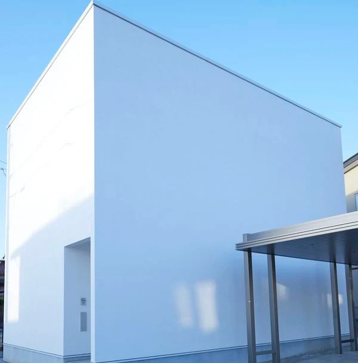
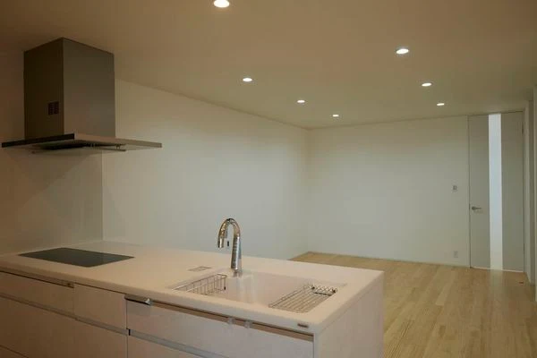
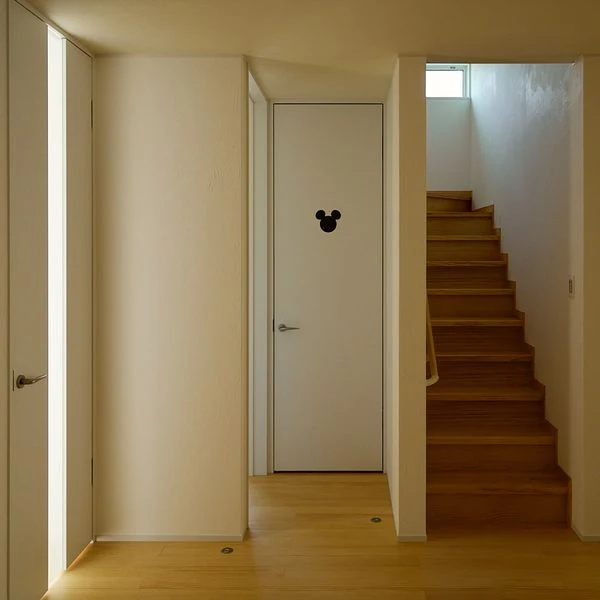
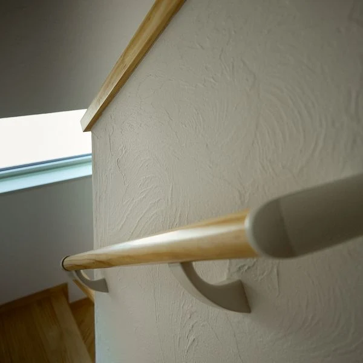
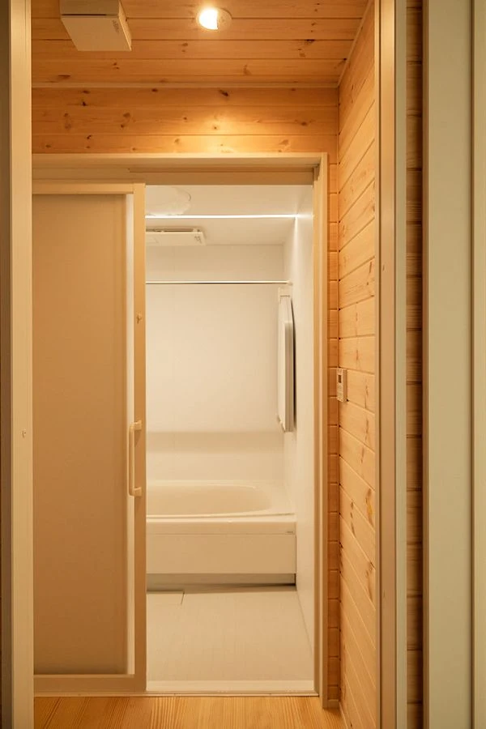
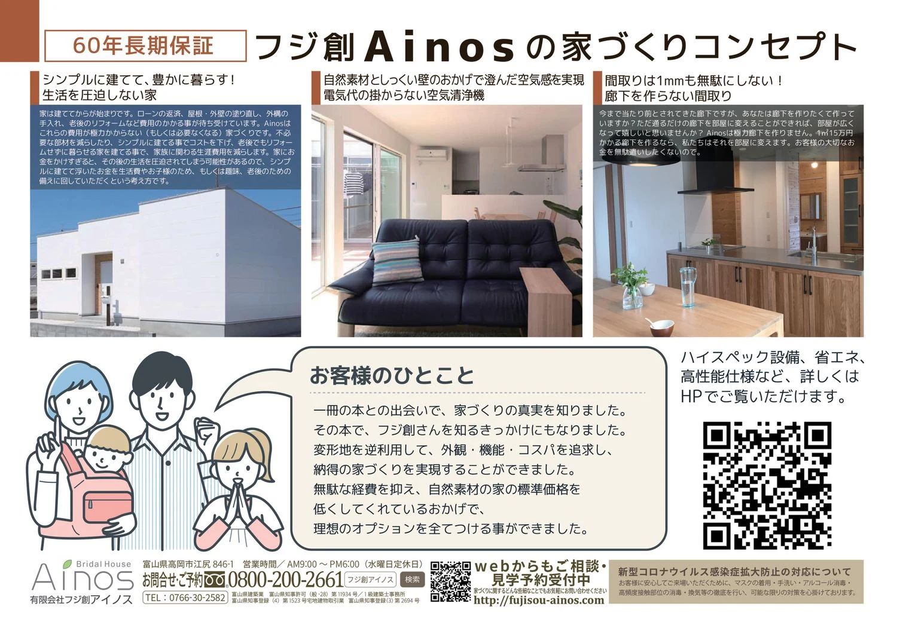

イベント情報
（終了しました）【富山市山室】"本物の健康住宅の家" 勉強会＆完成見学会
詳しいご案内
日程・価格・募集内容などは、掲載当時の情報です。
3月19日（土）20日（日）21日（月・祝）の3日間、富山市山室で、新築完成見学会を開催します。
お施主様のご厚意でお借りした、「限定3日間（完全予約制）」の開催です。

窓の無い外観はデザイン性を高めながらプライバシーを守り防犯性を高めます

キッチンから見渡せるリビング

©Disney
床から天井まで届くハイドア仕様でデザイン性と部材削減によるコスト低下を実現
ディズニーシリーズの設備がワクワク生活を演出してくれます

すべての壁は調湿性に優れて「消臭効果」「抗菌効果」のある「漆喰」仕上げ
漆喰は不燃材のため、火災時も燃えず有毒ガスを発生しません。
また、左官職人の技術により、イタリア風･和風など美しいデザインの壁を楽しむことができます。

こちらも調湿性に優れ暖かみのある「パイン材」を浴室脱衣所の壁と天井に採用
お施主様の家づくり
お施主様は家づくりを進めるにあたり、「小さな子どもと一緒に、家族みんなが安心して暮らすためにはどんな家がよいか？」と考えて、ご自身で様々な情報収集と勉強を重ねられました。
その結果「健康を害する恐れのある家」と「健康への悪影響が極めて少ない『健康住宅』」があることを発見。
その後、実際にモデルハウスや、新築完成見学会に足を運んでみると、『健康住宅』では「化学物質特有の嫌な匂いがしない」こと、「室内の空気が軽くて常に高原のような爽やかさ」であることを体感され、その秘密が "漆喰" や "無垢材"といった「自然素材」を使って建てた家であることを確信し、家を建てるなら「自然素材の家」と決意されました。
しかしながら、素材自体が安くないためにどうしても高額になるのが「自然素材の家」。探し求めるなかで「フジ創アイノスの自然素材の家」とご縁があり、「大切な価値」は損なわずに「価格」を抑えた内容に納得いただき、お選びいただくに至りました。
更に「安全」と「住む楽しさ」を追求して、理想に描いていた全てのオプションの追加を実現。飾り気の無い外観からは想像できない、充実した内側を秘めた仕上がりとなっています。
「日常の楽しさ」と「イザというときの備え」を両立した今回のお宅。
ベース価格を抑えた「フジ創アイノスの自然素材の家」だから実現できた、「本物の健康住宅の家」をご体感下さい。
「健康住宅」と「常識にとらわれない家づくり」が分かる見学会です
「家の表側に窓が無いのはなぜ？」
「家の中は明るいの？」
「"三角形の土地" をどうやって活かしたの？」
「蓄電池は本当に必要？」
「災害時の効果はどれぐらいあるの？」
などなど、
メーカーショウルーム にも展示されていない設備が満載の「特別仕様」のお宅だから、実際に見て・体感して気づくことが満載です。
--
家族の健康を第一に考えた『自然素材の家』。フジ創が３５年の探求を重ねてつくりあげました。
１歩足を踏み入れた瞬間に『空気の違い』を全身で体感していただけます。
長期間「安心して暮らせる家」を、是非この機会に "五感" で確かめてください。
お客様に合った最適をご提案

参加ご希望の方はお電話・または下記の予約フォームよりお気軽にお申込みください。
開催概要
- 開催日時
- 19日（土）20日（日）21日（月・祝）
AM10:00～PM5:00
- 開催場所
- 富山県富山市山室
※詳細はご予約の方にお伝えします。
新型コロナウイルス感染症
拡大防止の対応について
フジ創アイノスでは、モデルハウス、イベント会場において、お客様に安心してご来場いただくために、マスクの着用・手洗い・アルコール消毒・高頻度接触部位の消毒・換気等の徹底を行い、可能な限りの対策を心掛けております。
また、ご来場に関しましては、不特定多数の方で混み合う状況を避けるため、見学会・相談会・セミナー等の開催イベントにつきましては、事前予約をおすすめします。ご来場を希望される方は、WEB予約、お電話でのご予約をお願い致します。